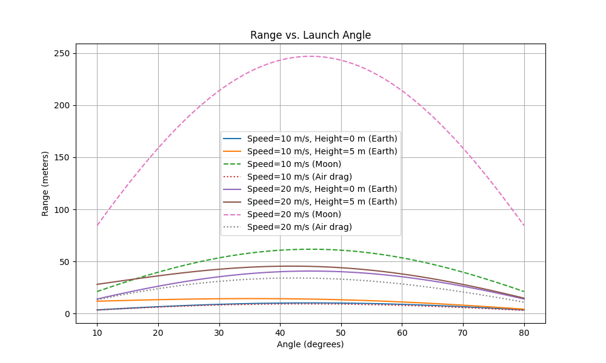

Problem 1
Theoretical Foundation
Projectile motion starts with two simple ideas: horizontally, a projectile moves at a steady speed because nothing pushes it side-to-side; vertically, gravity pulls it down at a constant rate (9.81 m/s² on Earth). These rules create a curved path, like throwing a ball. The path changes based on:
Speed: Throw faster, it goes farther and higher.
Angle: Low angles favor distance; high angles give height.
Starting height: Throwing from higher up extends the flight.
Gravity: Weaker gravity (like the Moon’s) stretches the path . This creates a “family” of paths—each mix of speed, angle, height, or gravity gives a unique curve. For example, a hard throw at 45° travels far, while a soft throw straight up lands close. These variations fit many scenarios, from sports to space launches.
The Basic Idea
- Push means Force: When you push the car, you're applying a force (\(F\)).
- Force makes it go faster: This force makes the car speed up (accelerate, \(a\)).
- Bigger car needs more push: A heavier car (\(m\)) needs a bigger push to speed up the same amount.
The Simple Rule (Newton's Second Law)
This idea is captured by a simple rule:
Force equals mass times acceleration.
How Speed Changes (Velocity)
Acceleration (\(a\)) is just how quickly the speed (velocity, \(v\)) changes over time (\(t\)). If the acceleration is constant, we can say:
where \(v_0\) is the starting velocity.
Putting it Together (Finding the Speed)
If we know the force and the mass, we can find the acceleration:
Then, we can find the speed at any time \(t\):
Substitute the acceleration:
This tells you how fast the car will be going at any time, depending on its starting speed, the push you gave it, and how heavy it is.
How Far it Goes (Position)
If the speed is changing at a steady rate (constant acceleration), the distance traveled (\(x\)) is the average speed times the time:
where \(x_0\) is the starting position.
Now, let's put everything together to get the position directly:
We know \(v = v_0 + \frac{F}{m}t\). Substitute this into the distance formula:
The Role of Starting Conditions
- Starting Position (\(x_0\)): If the car starts at a different spot, the whole journey is shifted.
- Starting Speed (\(v_0\)): If you give the car a harder initial push, it will be faster at all times.
So, by changing where the car starts (\(x_0\)) or how fast it starts (\(v_0\)), you get different paths for the car, even with the same constant push (\(F\)). These different paths are the "family of solutions." Each starting condition leads to a unique way the car moves.
Analysis of the Range
The range (how far the projectile lands) depends heavily on the launch angle:
Best angle: Around 45° usually gives the farthest range on flat ground, balancing height and distance.
Symmetry: Angles like 30° and 60° give the same range, but less than 45°.
No range: Throwing straight up (90°) or flat (0°) means it doesn’t go anywhere horizontally.
You're right, I got a bit carried away with the explanation! Let's get straight to the formula for the horizontal range of a projectile and how it's derived.
Derivation of the Horizontal Range Formula
-
Initial Velocity Components: A projectile is launched with an initial velocity \(v_0\) at an angle \(\theta\) to the horizontal. We break this velocity into horizontal (\(v_{0x}\)) and vertical (\(v_{0y}\)) components: \(\(v_{0x} = v_0 \cos(\theta)\)\) \(\(v_{0y} = v_0 \sin(\theta)\)\)
-
Time of Flight: The projectile lands when its vertical displacement is zero (\(y=0\)). Using the vertical motion equation: \(\(y(t) = v_{0y} t - \frac{1}{2} g t^2\)\) Setting \(y(T) = 0\) (where \(T\) is the total time of flight): \(\(0 = (v_0 \sin(\theta)) T - \frac{1}{2} g T^2\)\) Solving for \(T\) (and discarding the trivial solution \(T=0\)): \(\(T = \frac{2 v_0 \sin(\theta)}{g}\)\)
-
Horizontal Range: The horizontal range \(R\) is the horizontal distance covered during this time \(T\). Since the horizontal velocity is constant: \(\(R = v_{0x} T = (v_0 \cos(\theta)) \left(\frac{2 v_0 \sin(\theta)}{g}\right)\)\)
-
Using a Trigonometric Identity: We use the identity \(2 \sin(\theta) \cos(\theta) = \sin(2\theta)\) to simplify the expression: \(\(R = \frac{v_0^2 \sin(2\theta)}{g}\)\)
The Formula for Horizontal Range:
The horizontal range (\(R\)) of a projectile launched with an initial velocity (\(v_0\)) at an angle (\(\theta\)) with respect to the horizontal, under constant gravitational acceleration (\(g\)), is given by:
Other factors affect the range too:
Speed: A faster throw (e.g., 20 m/s vs. 10 m/s) sends it much farther.
Gravity: On the Moon (gravity = 1.62 m/s²), the range is way longer than on Earth.
Starting height: Throwing from a height (e.g., 5 m up) adds distance because it stays in the air longer.
For example, a 20 m/s throw at 45° goes farther than a 10 m/s throw, and even farther if launched from a hill or on the Moon.
Practical Applications
This model applies to real-world situations but needs tweaks for accuracy:
Uneven terrain: On a hill, the landing spot shifts. A downhill slope might increase range, like a golf ball rolling farther.
Air resistance: Air slows the projectile, shortening the range. The best angle drops to maybe 35°–40°, as seen in sports like baseball.
Examples:
Sports: In soccer, a well-angled kick clears defenders and reaches the goal. Golfers aim for distance with similar angle choices.
Engineering: Cannons use these ideas but adjust for wind or hills to hit targets.
Space: On Mars or the Moon, lower gravity means rovers or probes travel farther, helping plan landings.
To make it realistic, we can add air resistance or terrain shapes, often using numerical simulations to handle complex effects, as shown in the script below.
Implementation
import numpy as np
import matplotlib.pyplot as plt
g = 9.81
def calculate_range(v0, theta_deg, y0=0):
"""Calculate the range for given initial velocity, angle, and launch height."""
theta = np.radians(theta_deg)
if y0 == 0:
t_flight = 2 * v0 * np.sin(theta) / g
R = v0 * np.cos(theta) * t_flight
else:
a = -g / 2
b = v0 * np.sin(theta)
c = y0
t_flight = (-b + np.sqrt(b**2 - 4*a*c)) / (2*a)
R = v0 * np.cos(theta) * t_flight
return R
v0_values = [10, 20, 30]
y0_values = [0, 10]
theta_deg = np.linspace(0, 90, 91)
plt.figure(figsize=(10, 6))
for v0 in v0_values:
for y0 in y0_values:
R = [calculate_range(v0, th, y0) for th in theta_deg]
label = f'v0={v0} m/s, y0={y0} m'
plt.plot(theta_deg, R, label=label)
plt.title('Range vs. Angle of Projection')
plt.xlabel('Angle (degrees)')
plt.ylabel('Range (meters)')
plt.grid(True)
plt.legend()
plt.show()

What the plot shows:
Angles: Range peaks near 45° for flat ground, slightly lower with height or airresistance.
Speed: 20 m/s throws go farther than 10 m/s.
Height: Starting 5 m up increases range.
Moon: Lower gravity boosts range a lot.
Air resistance: Shortens range and shifts the best angle to ~35°–40°.
This matches our analysis: 45° is best without complications, but speed, height, gravity, or air change the outcome.